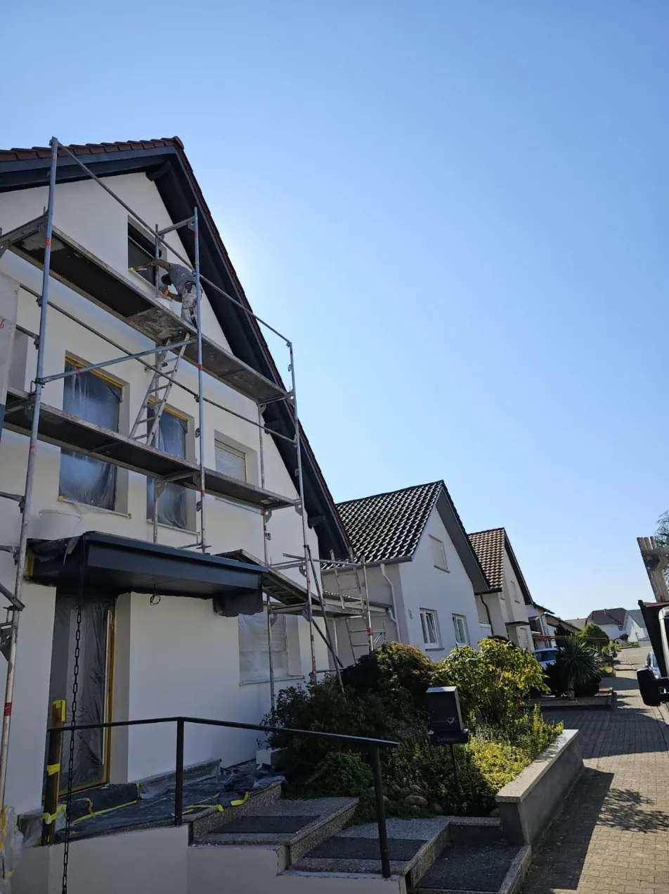
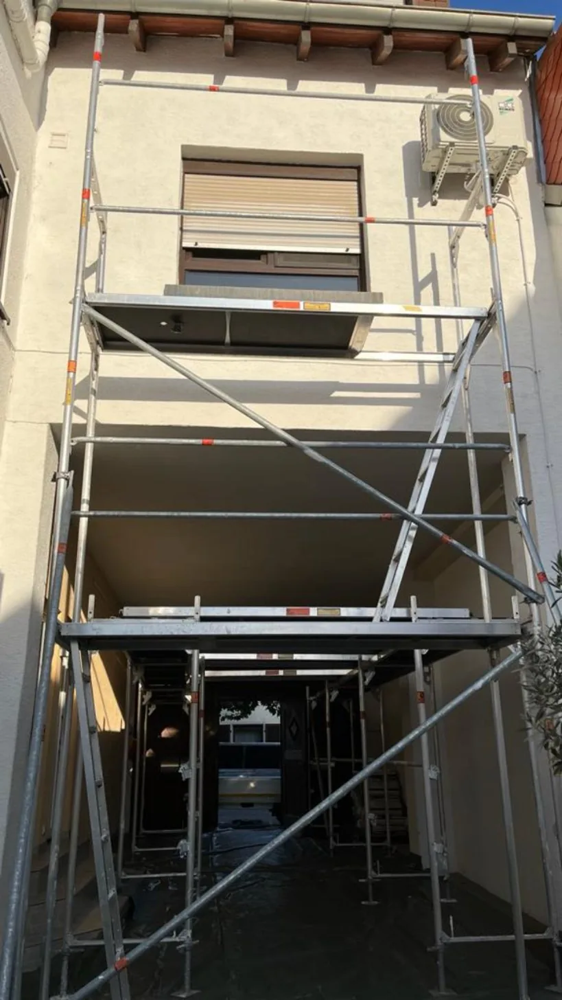
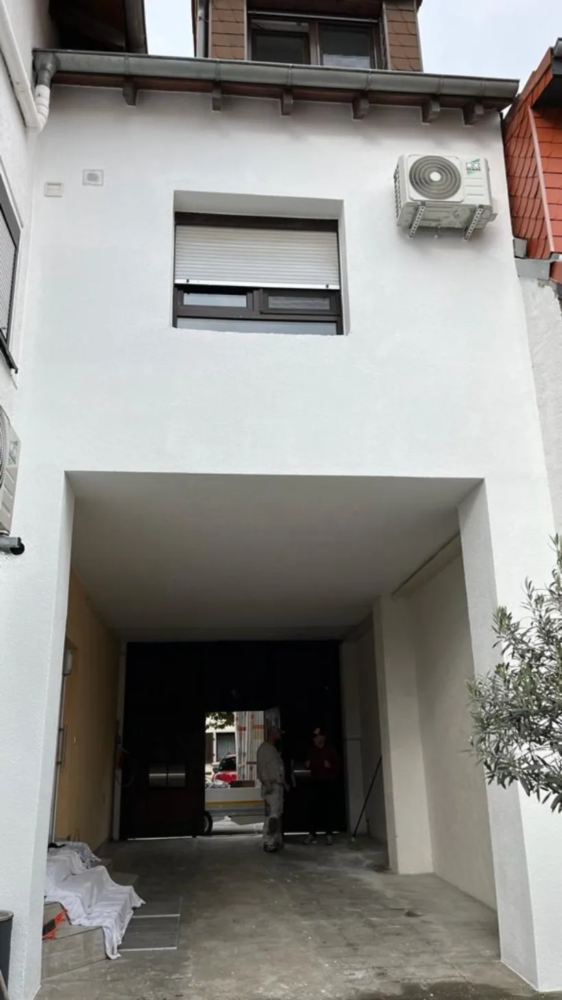
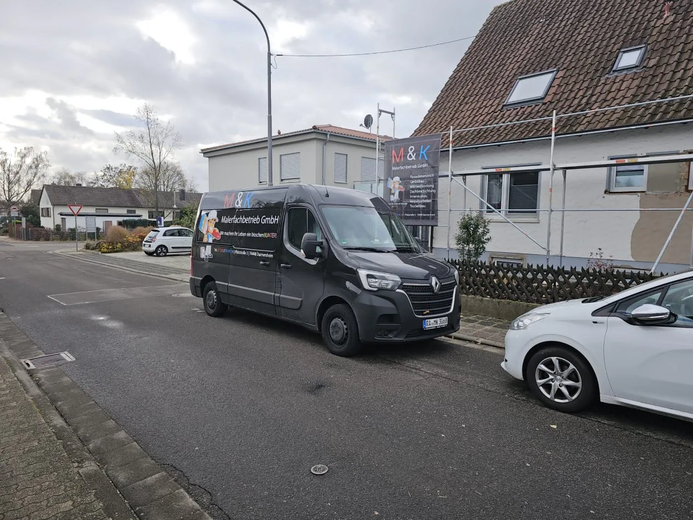
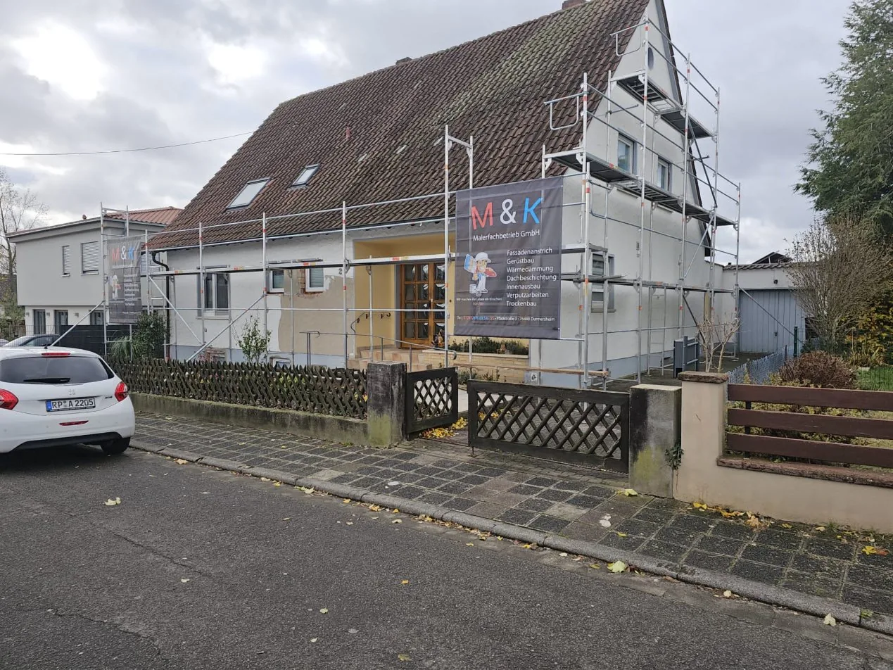
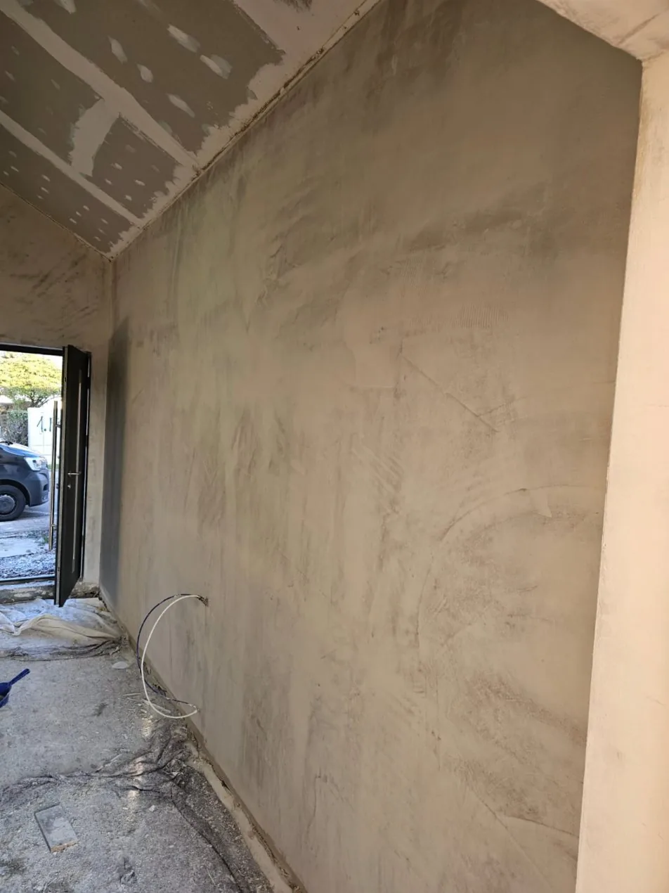
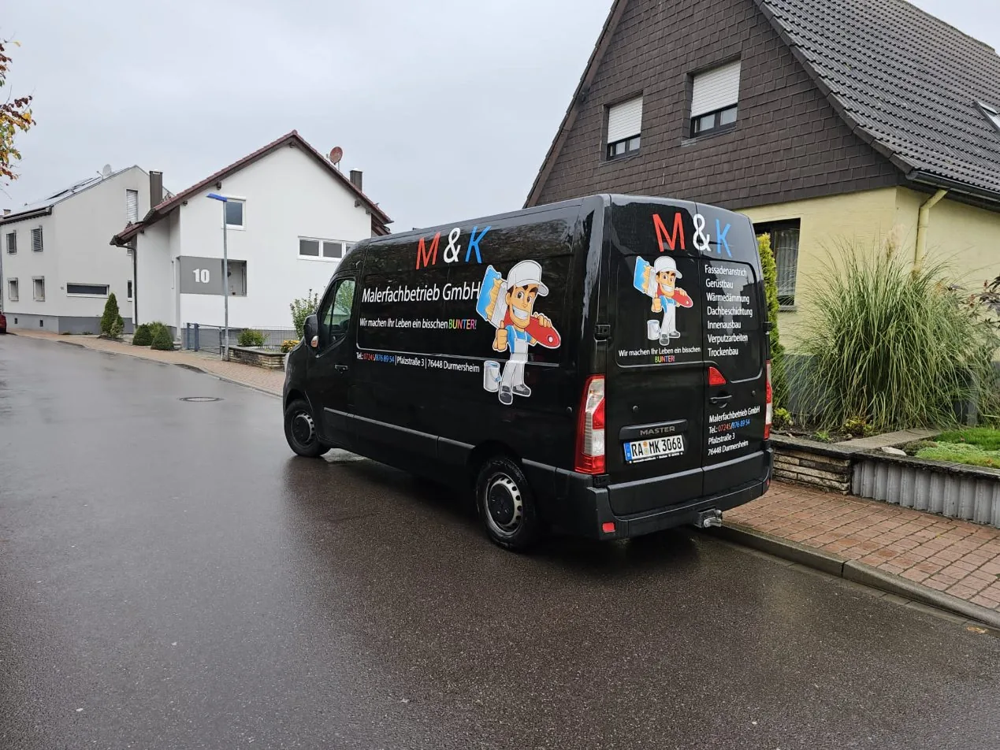

Thomas Metz
Gelernter Stuckateur mit über 40 Jahren auf dem Bau. Seine Leidenschaft gilt Präzision und Sorgfalt, von der ersten Putzlage bis zur letzten Kante.
Fassade, Gerüst, Dämmung, Dach und Innenausbau aus einer Hand. Mit eigenem Gerüstbau und einem Team, das seit Jahrzehnten im Handwerk steht.

Vorher/Nachher
Gerüst gestellt, Untergrund vorbereitet, neu gestrichen. Echtes Projekt von M&K, fotografiert vor und nach der Arbeit.
VorherNachher


Von der Fassade bis zur Trockenbauwand. Das Gerüst stellen wir selbst, dadurch hängt Ihr Termin an niemand anderem.
Reinigen, ausbessern, neu streichen.
Eigener Gerüstbau, kein Subunternehmer.
Weniger Heizkosten, bessere Fassade.
Schutz und neue Farbe fürs Dach.
Räume renovieren und neu gestalten.
Innen- und Außenputz, glatt oder strukturiert.
Wände, Decken, Dachschrägen.
Wofür M&K steht
Gelernter Stuckateur mit über 40 Jahren auf dem Bau. Seine Leidenschaft gilt Präzision und Sorgfalt, von der ersten Putzlage bis zur letzten Kante.
Bringt sein Wissen über Farben und Oberflächen ins Team und arbeitet in jedem Auftrag auf ein herausragendes Ergebnis hin.
Baustellen von M&K



